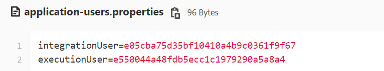
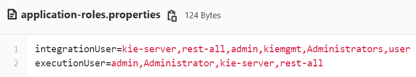

How to add users using file-based strategy in PAM/DM 7.12
Issue Identified:
Custom Users/Roles not created in RHPAM 7.12.1/EAP 7.4.1.
Sample of invalid user.xml:
<?xml version="1.0" ?>
<identity xmlns="urn:elytron:1.0">
<attributes>
<name="roles" value="kie-server"></attribute>
<attribute name="roles" value="rest-all"></attribute>
<attribute name="roles" value="admin"></attribute>
<attribute name="roles" value="kiemgmt"></attribute>
<attribute name="roles" value="Administrators"></attribute>
<attribute name="roles" value="user"></attribute>
</attributes></identity>$ Error in logs:
23:35:20,692 ERROR [org.jboss.as.controller.management-operation] (CLI command executor) WFLYCTL0013: Operation (“set-password”) failed – address: ( (“subsystem” => “elytron”), (“filesystem-realm” => “ApplicationRealm”) ) – failure description: “WFLYCTL0216: Management resource ‘[
(\”subsystem\” => \”elytron\”),
(\”filesystem-realm\” => \”ApplicationRealm\”)
]’ not found”
The batch failed with the following error (you are remaining in the batch editing mode to have a chance to correct the error):
WFLYCTL0062: Composite operation failed and was rolled back. Steps that failed:
Step: step-11
Operation: /subsystem=elytron/filesystem-realm=ApplicationRealm:set-password(identity=pamAdmin, clear={password=’testAdmin’})
Failure: WFLYCTL0216: Management resource ‘ (“subsystem” => “elytron”), (“filesystem-realm” => “ApplicationRealm”) ‘ not found
Warning in logs:
23:36:18,734 WARN [org.jboss.modules.define] (ServerService Thread Pool -- 86) Failed to define class org.jboss.resteasy.microprofile.config.ServletConfigSourceImpl in Module "org.jboss.resteasy.resteasy-jaxrs" version 3.15.1.Final-redhat-00001 from local module loader @21edd891 (finder: local module finder @de579ff (roots: /opt/eap/modules,/opt/eap/modules/system/layers/openshift,/opt/eap/modules/system/layers/base/.overlays/layer-base-jboss-eap-7.4.1.CP,/opt/eap/modules/system/layers/base,/opt/eap/modules/system/add-ons/keycloak)): java.lang.NoClassDefFoundError: Failed to link org/jboss/resteasy/microprofile/config/ServletConfigSourceImpl (Module "org.jboss.resteasy.resteasy-jaxrs" version 3.15.1.Final-redhat-00001 from local module loader @21edd891 (finder: local module finder @de579ff (roots: /opt/eap/modules,/opt/eap/modules/system/layers/openshift,/opt/eap/modules/system/layers/base/.overlays/layer-base-jboss-eap-7.4.1.CP,/opt/eap/modules/system/layers/base,/opt/eap/modules/system/add-ons/keycloak))): org/eclipse/microprofile/config/spi/ConfigSource at java.base/java.lang.ClassLoader.defineClass1(Native Method)
Other errors if an invalid user/roles properties file is provided:
sh-4.4$ /opt/eap/bin/elytron-tool.sh filesystem-realm --users-file /home/jboss/custom/application-users.properties --roles-file /home/jboss/custom/application-roles.properties --output-location /opt/eap/standalone/configuration/kie-fs-realm-users --filesystem-realm-name kie-fs-realmusers --debug
WARNING: No roles were found for user
WARNING: Roles were found for user , but user was not defined.
WARNING: No roles were found for user
Exception encountered executing the command:
java.lang.IndexOutOfBoundsException
at java.base/java.lang.Character.offsetByCodePoints(Character.java:8699)
WARNING: No password was found for user
WARNING: No roles were found for user
WARNING: No roles were found for user
Exception encountered executing the command:
java.lang.IndexOutOfBoundsExceptionSolution
The following steps will help resolve the above issues:
- Patch RHPAM 7.12.1 with EAP 7.4.4
STEP 1/5: FROM registry.redhat.io/rhpam-7/rhpam-kieserver-rhel8:7.12.1-3
STEP 2/5: COPY jboss-eap-7.4.4-patch.zip /tmp/jboss-eap-7.4.4-patch.zip
--> Using cache f9926b6ad308871c77bf3f1e650104f1c64f249b487613e4181d8e1e9ca9cd07
--> f9926b6ad30
STEP 3/5: USER root
--> Using cache 15639841591027c9db7a4056ea69b51252d72dac6a2704528533d5b0ce03496f
--> 15639841591
STEP 4/5: RUN $JBOSS_HOME/bin/jboss-cli.sh --command="patch apply /tmp/jboss-eap-7.4.4-patch.zip --override-modules" ; rm /tmp/jboss-eap-7.4.4-patch.zip
{
"outcome" : "success",
"result" : {}
}
STEP 5/5: USER 185
COMMIT image-registry.openshift-image-registry.svc:5000/op2/rhpam-kieserver-rhel8-custom:7.12.1-test
--> 85398f6feb7
Successfully tagged image-registry.openshift-image-registry.svc:5000/op2/rhpam-kieserver-rhel8-custom:7.12.1-test
85398f6feb78e1485f53a2ee154d20d33b2b7457a13325cfc9a928c7a7592ce3- Validate EAP version
[jboss@4c610ade4e51 eap]$ ls JBossEULA.txt LICENSE.txt appclient bin docs domain jboss-modules.jar jolokia.jar migration modules standalone version.txt welcome-content [jboss@4c610ade4e51 eap]$ more version.txt Red Hat JBoss Enterprise Application Platform - Version 7.4.4.GA
- Update the custom application-users.properties and application-roles.properties file to include Realm name:
Sample application-users.properties:


- Command to update custom users/roles file through elytron-tool.sh
echo "START - enable-users"
/opt/eap/bin/elytron-tool.sh filesystem-realm --users-file /home/jboss/custom/application-users.properties --roles-file /home/jboss/custom/application-roles.properties --output-location /opt/kie/data/kie-fs-realm-users
find /opt/kie/data/kie-fs-realm-users -name *.xml -exec sed -i 's/<attribute name="roles"/<attribute name="role"/g' {} \;
echo "END - enable-users"- Expected user.xml generated in output-location (/opt/kie/data/kie-fs-realm-users):
<?xml version="1.0" ?>
<identity xmlns="urn:elytron:1.0">
<credentials>
<password algorithm="digest-md5" format="base64">Ag9pbnRlZ3JhdGlvblVzZXIQQXBwbGljYXRpb25SZWFsbSjAetOv+11Kg3GFrzK+r98</password>
</credentials>
<attributes>
<attribute name="role" value="kie-server"></attribute>
<attribute name="role" value="rest-all"></attribute>
<attribute name="role" value="admin"></attribute>
<attribute name="role" value="kiemgmt"></attribute>
<attribute name="role" value="Administrators"></attribute>
<attribute name="role" value="user"></attribute>
</attributes></identity>sh-4.4$ Root Cause
RHPAM 7.12.1 paired with EAP 7.4.1 does not create a valid XML file for kie-fs-realm users/roles. Reference RedHat support case – https://access.redhat.com/support/cases/#/case/03197932